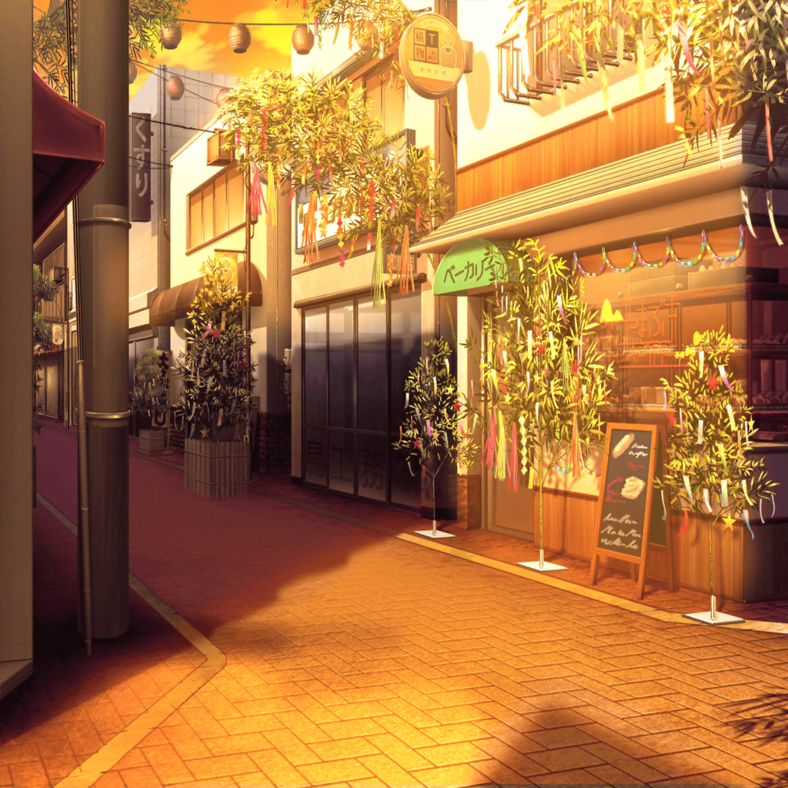

商店街
紗夜
母から買い物を頼まれているから、
これで失礼するわ。日菜のこと……教えてくれてありがとう
彩
ううんっ！ それじゃあね！
紗夜
……
花音
紗夜ちゃんと日菜ちゃん……大丈夫かな？
彩
うーん……どう、だろう……？
日菜ちゃん、紗夜ちゃんの話になると
いつもと違う感じになるんだよね
花音
そうなんだ？
彩
二人に何があったのかはわからないんだけど……
なんだかすれ違ってる感じがして……
花音
ちょっと、心配、だね……
日菜
ん〜……なんだかるんっとしない１日だったなあ。
早く家に帰って、ゆっくりしよう……ん？
日菜
『短冊に願いを』……？
へえ、おもしろそうっ！
日菜
せっかくだし、書いていこうっ！
日菜
えっとー、お願いごとはもちろん……
日菜
（今日はおねーちゃんと一緒に七夕祭り、
まわれなかったけど……でも……！）
日菜
よしっ、書けた！
えっへへ〜。叶うといいな〜♪
日菜
あとは短冊を笹の葉に……
紗夜
日菜？
日菜
おねーちゃん……！？
紗夜
こんなところで何をしているの？
日菜
あはは……おねーちゃんに断られちゃったから、
１人で七夕祭り、見て回ろうと思って。
雨であんまりまわれなかったけど
日菜
おねーちゃんは？
紗夜
私は……お母さんから買い物を頼まれたから。
七夕祭りに用はないわ。その手に持っているものは？
日菜
短冊！
お願い事を書いてたんだ〜
紗夜
そう……
日菜
……
紗夜
……
日菜
おねーちゃん、あの……わわっ！？
紗夜
日菜、一体……！？
日菜
おねーちゃん、大変〜〜！！
あたしの短冊、鳥がくわえて持って行っちゃった！
日菜
ほら、あの鳥！！
紗夜
書き直せばいいじゃない。何をそんなに……
日菜
待って〜！！ あたしの短冊〜！！
紗夜
日菜、無理よ！
日菜
やだよ！ あの短冊にはすっごくすっごーく大事な
お願いを書いたんだから！
日菜
だから、取り返したいの！！
紗夜
ちょっと、日菜……っ！
ああ、もう……！